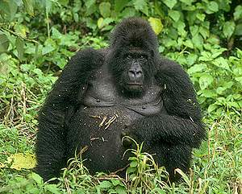

This Week:
Gentle Giants 
Unlike the legendary King Kong, gorillas are not fearsome monsters of the jungle. Although they are the largest living primates -- males are 5 to 6 feet tall and weigh up to 400 pounds -- they are peaceable by nature, primarily vegetarian and highly intelligent. At age 12 or 13, males reach full physical maturity and are called "silverbacks" for the large patch of white hair which appears on their backs. Gorillas live in troops consisting of one silverback, a few younger males and several females and infants. Three subspecies of gorilla are found in Central Africa. The western lowland gorilla, the one most commonly seen in zoos, inhabits Western Africa. Eastern lowland gorillas are found in eastern Zaire, while the mountain gorilla, the subject of Dian Fossey's studies, makes its home in the Virunga volcanoes of Zaire, Uganda and Rwanda, and in the Bwindi Forest of Uganda. Highly endangered due to poaching and habitat encroachment by humans, only about 650 mountain gorillas remain in the wild.
Dr. A. H. "Sandy" Harcourt is a professor of anthropology at the University of California, Davis. His research on gorilla socioecology has taken him to the Queen Elizabeth National Park, Uganda, the Karisoke Research Centre in the Virunga volcano region of Rwanda, Uganda and Zaire, the Bwindi Forest in Uganda, and the forests of southeast Nigeria.
Dr. Kelly Stewart,
his wife and collaborator, is a research associate in the same department and
editor of the annual newsletter Gorilla Conservation News.
Main
WebLinks
Picture: Kennan Ward Photography/Corbis |
Copyright © 1997 Discovery Communications, Inc.
Talk to gorilla experts Dr. A. H. "Sandy" Harcourt and Dr. Kelly Stewart, right here May 4 - 10:
Gorilla society
Do gorillas have a complex social structure?
Great ape biology
What similarities do we share with our fellow primates?
Primate protection
What measures must be taken to save gorillas from extinction?
"Gorilla" is on this week's Wild Discovery series. Tune in every night at 8 p.m. ET/PT.
Promo video [758 K]